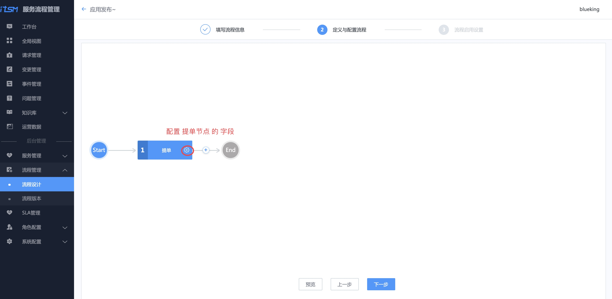
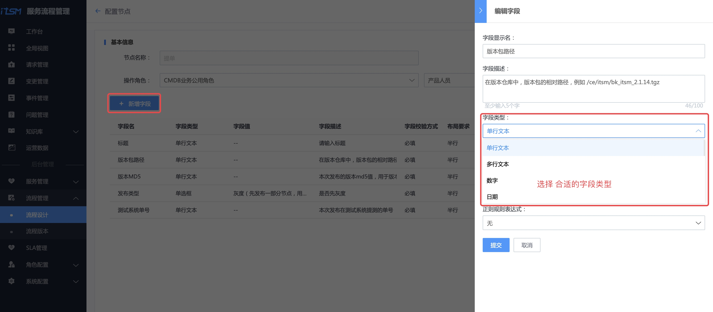
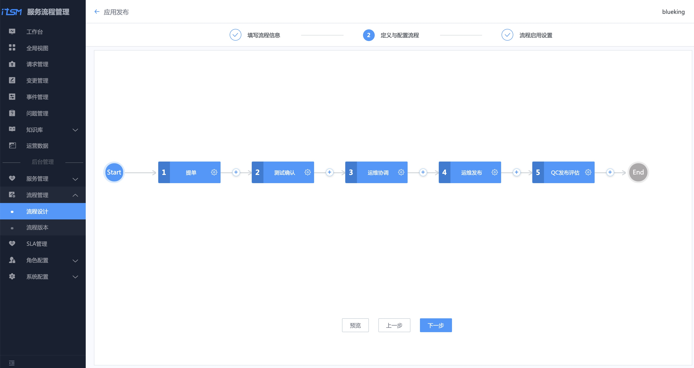
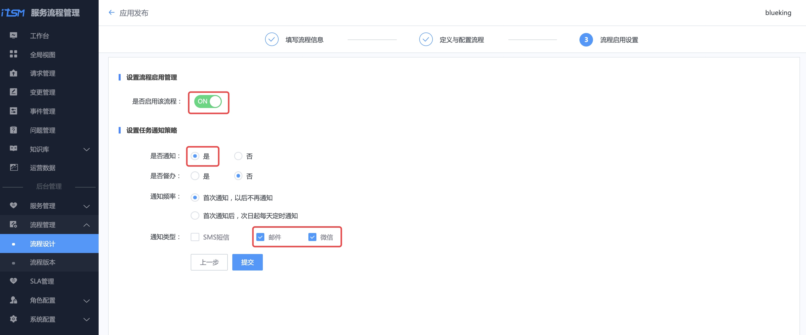
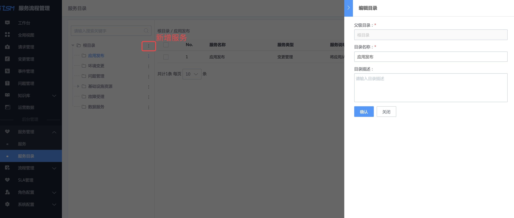
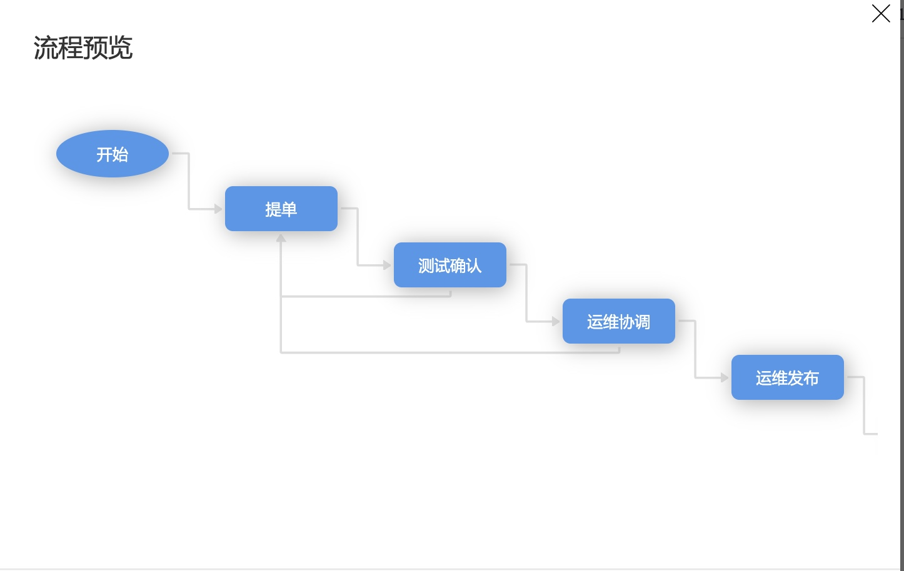

发布流程线上化
情景
应用发布是运维的职能之一，传统的应用发布通过邮件交付，沟通成本太高，而且不符合合规性检查。
接下来，以一个业务的应用发布为例，看蓝鲸 ITSM 是如何解决这个痛点的。
前提条件
操作步骤
- 梳理应用发布流程
- 创建应用发布服务目录及流程
- 一次应用发布示例
1. 梳理应用发布流程
从 ITSM 理论出发，梳理一个应用发布流程图，将测试环境验收通过的版本，部署到生产环境。包含研发运营环节的测试、产品提交发布需求、运维协调发布资源、发布，以及最后质量保证(QA)对应用发布质量的管理。

流程图中是一个实践案例，部分数据需要从周边系统获取，此处功能需要做二次开发，本教程专注流程本身。
2. 创建"应用发布"流程及服务目录
先设计应用发布的流程，流程依附在服务目录上对外提供服务。
2.1 角色设置
使用蓝鲸管理员账号给该业务分配对应角色的权限。

使用管理员账号新增通用角色 QC ，并添加用户 qc_c（该账户是前提条件中准备的）。

2.2 设计应用发布流程
2.2.1 填写流程信息
选择菜单【流程设计】 ，点击【新增】按钮，按提示填写流程信息。

流程类型选择【变更】，需要【关联业务】，因为应用发布和业务相关，同时关联业务对应的角色：产品、运维、测试。
点击【下一步】，进入【定义与配置流程】环节。
2.2.2 定义与配置流程

点击上图【流程画布】中的【齿轮】，配置【提单】流程节点的字段。
一般是业务的产品提应用的发布单据，所以操作角色选择【CMDB 业务公用角色】-> 【产品人员】。

点击【新增字段】，参照 梳理应用发布流程，新增每个环节中需要的字段。

参照 梳理应用发布流程，完成整个应用发布流程的配置。

2.2.3 启用流程
【启用流程】，选择适合的通知策略，点击【提交】完成流程设计。

2.2.4 流程模板实例化
选择菜单【流程设计】，找到刚编辑的应用发布流程，点击【部署】，生成流程实例。

2.3 在服务目录中新增"应用发布"服务，并绑定流程
选择菜单【服务】，点击【新增】按钮，新增"应用发布"服务，并关联刚生成的流程实例。

选择菜单【服务目录】，选中【根目录】，点击右侧【 ⋮ 】，点击【新增】，按提示新增一个名为应用发布的服务目录。

选中刚刚创建的服务目录【应用发布】，右侧会显示【添加】按钮，点击该按钮添加应用发布服务。

3. 一次应用发布示例
创建完"应用发布"流程及服务目录后，接下来做一次应用发布演示。

3.1 产品提交发布需求
用产品账号登录 ITSM ，选择【变更管理】菜单，点击【新增变更】，选择【应用发布】服务，点击【提交】。

在变更申请界面，填写本次版本发布的关键信息，包括版本包路径、MD5 ，用于自动化应用发布系统直接从仓库中获取版本，以及版本发布范围和时间。
点击【提交】，创建发布需求。

3.2 测试确认版本质量
测试人员收到一封待处理的测试确认邮件。

使用测试账号登录 ITSM ，在待办列表中，找到刚刚产品提的发布单。

点击链接，选择评估结果和测试结果，并填写测试概况，点击【通过】，完成本环节流程。


3.3 运维协调资源
使用运维的账号登录 ITSM，在待办列表找到单据。

点击【通过】，开始协调发布资源，做好发布准备。

3.4 运维实施发布
完成了发布准备，到了计划发布时间，在自动化应用发布系统（如标准运维）上完成应用发布后，在该发布单的运维发布环节填写本次运维发布的概况。

3.5 QC 发布评估
QC（质量保障）人员在工作台的待办列表中，找到本次发布的单据。

QC 根据业务指标监控系统的数据以及事件管理中是否存在关联的事件，对此次发布做出发布评估。

至此，一次应用发布的流程结束。